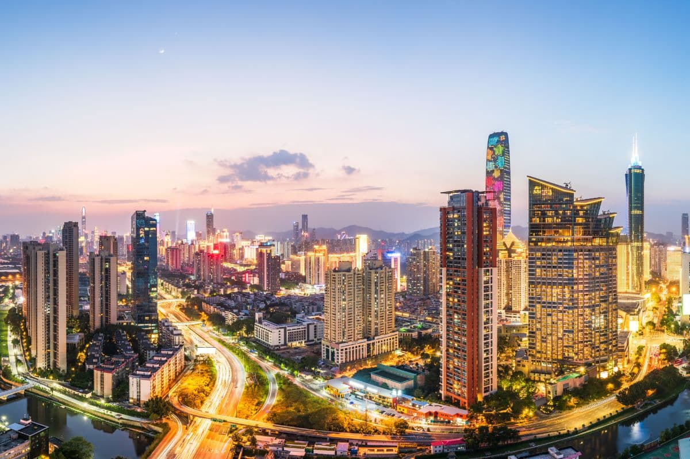

SZ's first-store economy on fast track
Shenzhen's first-store economy continues to thrive, with 165 new first stores opening in the third
quarter of 2024, a 13% year-on-year increase and the highest quarterly total since 2018. The
first-store economy refers to new store openings — especially initial or flagship locations — by
global or trendy brands within a defined geographic market. It serves as a barometer of the
local business environment and spending power. According to statistics from Winshang.com, a
leading marketing platform in the retail commerce sector, by the end of September, Shenzhen
had welcomed 336 new first stores this year, a 26% increase compared to 2023. Many of these
stores have introduced innovative experiences to local customers, bringing fresh energy to the
city's retail sector, a Shenzhen Special Zone Daily report said yesterday. The new first
stores were predominantly in the catering, retail, life services, cultural, sports, and
entertainment sectors. Among those opened in the first nine months, 22 were the first in
the country, representing 13% of the total. Fifty-eight of them, or 35%, were the first in
South China, and 52%, or 85 stores, were the first in the city. Shenzhen has become the
first stop for more and more international brands entering the South China market. Data
shows that in the first three quarters of this year, Shenzhen has seen the opening of 69
first stores by international brands. In the third quarter alone, brands from 14 countries
opened 35 first stores. These international first stores are mainly concentrated in
categories such as clothing and fashion, with high-end and luxury brands accounting for
80%. The Futian CBD remained the most popular area for first stores. Shenzhen High-tech Industrial Park in
Nanshan District came in second. In recent years, Shenzhen has implemented a series of initiatives aimed at
positioning the city as a premier destination for high-end brands targeting the local market. Data from
Winshang.com reveals that since 2022, Shenzhen has seen over 1,000 new first stores open, placing it second
only to Shanghai among China's four top-tier cities — Beijing, Shanghai, Guangzhou, and Shenzhen.

Investing in Shenzhen: Industry, Economics, and Policy
Often dubbed China’s Silicon Valley, Shenzhen is China’s fastest-growing city. It is ranked by the
Chinese Academy of Social Sciences as the mainland’s top city for “overall economic competitiveness” and is
China’s premier Special Economic Zone (SEZ) for foreign investment as well as a sub-provincial class city.
Shenzhen was declared China’s first SEZ by then-Communist Party (CCP) chairman Deng Xiaoping in
1979. Aided by capital flowing easily from neighboring Hong Kong, the city has since transformed
from a small fishing town to a bustling megacity.
Every year, millions flock to its city center as part-time or migrant workers, entrepreneurs from around the
globe seek to benefit from its investment-friendly practices, and tourists admire its futuristic landscape.
Located in Guangdong province only 100 km (62 miles) southeast of its capital, Guangzhou, Shenzhen
is strategically located on the Pearl River Delta that serves as a border with Hong Kong. The city center is
under 20 minutes from Kowloon by fast train. Other nearby cities include Zhongshan, Dongguan, and Foshan.
2021 economic overview
Shenzhen is China’s third-largest city by GDP after Shanghai and Beijing. GDP in 2021 surpassed the RMB 3
trillion mark, up 6.7 percent from the previous year. This is a significant recovery from the 3.1 percent
year-on-year growth in 2020. Shenzhen also has the highest per capita of any city in China, reaching RMB
173,663 (US$25,889) in 2021.
Shenzhen is a service-driven economy, with the tertiary sector accounting for almost 63 percent of GDP.
Manufacturing nonetheless remains an important mainstay industry, accounting for almost all of the
remaining value-add to GDP.
According to the Outline Development Plan for the Guangdong-Hong Kong-Macao Greater Bay Area (GBA), Shenzhen
is one of four core cities to serve as the engines for development in the region. Shenzhen is frequently
called upon to be the GBA’s technology and R&D hub. As of 2018, four percent of Shenzhen’s GDP was invested in
research and over 11,000 high-tech enterprises called the city home.

Abu Dhabi and Shenzhen sign Twin City agreement
UAE capital Abu Dhabi and China’s Shenzhen have signed a Twin City agreement, under which both
parties will share knowledge and collaborate on smart city projects across multiple areas.
These include infrastructure, city planning, green mobility, transportation, advanced technology, autonomous
solutions, sustainability, and urban development.
Situated in the southeastern part of China, Shenzhen is one of the fastest-growing cities in the world. It had
a population of 17.5 million in 2020 and is widely regarded as one of the most technologically advanced in
the world in terms of infrastructure.
The agreement was signed during the inaugural Abu Dhabi x Shenzhen Innovation Forum (ADSZIF) held in Shenzhen.
Mohamed Ali Al Shorafa, Chairman of the Department of Municipalities and Transport (DMT) and Qin Weizhong,
Mayor of Shenzhen, were the signatories.
Al Shorafa said: “Abu Dhabi has its sights firmly set on being a global pioneer in sustainable and smart urban
development. We are committed to leveraging innovation and technology to transform urban living and improve
the lives, well-being and experience of all those connected to the UAE capital and across the emirate.
“Leveraging strategic partnerships is key to delivering any ambitious vision and Shenzhen is one of the most
advanced cities in the world. We are confident that the agreements signed during the forum will ensure our two
world-class cities become even more attractive to citizens, visitors, businesses, and investors in the Year
of the Dragon and beyond.”
Weizhong added: “Shenzhen is delighted to sign the Twin City agreement with Abu Dhabi and looks forward to
working directly with DMT to exchange ideas and collaborate on smart city strategy.
Acting as the southern gateway to China and important node of GBA, Shenzhen is a modern metropolis located
immediately north of Hong Kong, bearing significance in steering the economic growth of both cities and
creating a transportation hub that connects the communities. Standing at 247m tall, the Huanggang Port
Headquarters is set to be the new landmark for the Shenzhen Technology and Innovation Park and Shenzhen
Hong Kong Cooperation Zone.
Drawing inspiration from the surrounding landscape and reflecting the regional characteristics, the design
is based on the imagery of stacking stones and rivers. A simple fluid architectural form is adopted which
signifies flowing water, while the cantilevered canopy at the tower’s entrance signifies the splashes. It
has adopted a ripple-like cascading form, echoing the overall shape of the tower. The vertical lines of
the façade pour from the crown to the lobby, unifying the architectural language from top to bottom.
Visitors also get to experience an arrival experience of grandeur and warmth with the 13-metre tall,
light-filled lobby, which has utilised a transparent glass panel wall to bring vitality to the city as
the cornerstones of the GBA cities.
The plane design follows a rigorous and symmetrical geometric form. Through the superposition of four
circles, the façade has adopted round corners formed by four arcs, the building space is made regular and
efficient, optimising the landscape view and creating a vibrant architectural form to greet the city.
Dividing the lateral floorplan into four, the interior is flexible and offers 10-14 metres of office
depth, in order to cater for corporates of different sizes and needs. There are also some open offices
near the crown of the building, which facilitates communication and interaction through the introduction
of indoor-outdoor spaces. The greenery-adorned sky lobbies and featured roof are destined for recreational
use, allowing workers to connect and unwind, while enhancing the development’s aesthetics and porosity.
It also provides an active and vibrant towerscape, where workers may enjoy a panoramic view that
overlooks the nearby superior landscape resources.
The design has achieved a high assembly rate that optimises construction resources and time. To create an
environmentally-friendly tower, vertical fins have been adopted to provide sufficient shading, and low
reflection energy-saving curtain wall panels to minimise our carbon footprint. The integrity of the
tower’s appearance has been preserved through an integrated system of ventilation solutions, achieving
a low carbon design for the tower.
“Built based on the principles of ‘high quality’, ‘customisation’ and ‘sustainability’, we envision a
harmonious layout of simple geometric shapes together formed by the tower and Huanggang Port, that
ontributes to the development of the Shenzhen-Hong Kong Cooperation Zone,” says Chris.
Aedas is the world’s only local and global architecture and design practice driven by global sharing of
research, local knowledge and international practice. Our 1,100 creative minds with design studios
across the globe create world-class design solutions with deep social and cultural understanding of
the communities we design for. We create world-class design solutions that are tailored to the needs
of cities and communities around the world.
SZ's first-store economy on fast track
Shenzhen's first-store economy continues to thrive, with 165 new first stores opening in the third
quarter of 2024, a 13% year-on-year increase and the highest quarterly total since 2018. The
first-store economy refers to new store openings — especially initial or flagship locations — by
global or trendy brands within a defined geographic market. It serves as a barometer of the
local business environment and spending power. According to statistics from Winshang.com, a
leading marketing platform in the retail commerce sector, by the end of September, Shenzhen
had welcomed 336 new first stores this year, a 26% increase compared to 2023. Many of these
stores have introduced innovative experiences to local customers, bringing fresh energy to the
city's retail sector, a Shenzhen Special Zone Daily report said yesterday. The new first
stores were predominantly in the catering, retail, life services, cultural, sports, and
entertainment sectors. Among those opened in the first nine months, 22 were the first in
the country, representing 13% of the total. Fifty-eight of them, or 35%, were the first in
South China, and 52%, or 85 stores, were the first in the city. Shenzhen has become the
first stop for more and more international brands entering the South China market. Data
shows that in the first three quarters of this year, Shenzhen has seen the opening of 69
first stores by international brands. In the third quarter alone, brands from 14 countries
opened 35 first stores. These international first stores are mainly concentrated in
categories such as clothing and fashion, with high-end and luxury brands accounting for
80%. The Futian CBD remained the most popular area for first stores. Shenzhen High-tech Industrial Park in
Nanshan District came in second. In recent years, Shenzhen has implemented a series of initiatives aimed at
positioning the city as a premier destination for high-end brands targeting the local market. Data from
Winshang.com reveals that since 2022, Shenzhen has seen over 1,000 new first stores open, placing it second
only to Shanghai among China's four top-tier cities — Beijing, Shanghai, Guangzhou, and Shenzhen.
Investing in Shenzhen: Industry, Economics, and Policy
Often dubbed China’s Silicon Valley, Shenzhen is China’s fastest-growing city. It is ranked by the
Chinese Academy of Social Sciences as the mainland’s top city for “overall economic competitiveness” and is
China’s premier Special Economic Zone (SEZ) for foreign investment as well as a sub-provincial class city.
Shenzhen was declared China’s first SEZ by then-Communist Party (CCP) chairman Deng Xiaoping in
1979. Aided by capital flowing easily from neighboring Hong Kong, the city has since transformed
from a small fishing town to a bustling megacity.
Every year, millions flock to its city center as part-time or migrant workers, entrepreneurs from around the
globe seek to benefit from its investment-friendly practices, and tourists admire its futuristic landscape.
Located in Guangdong province only 100 km (62 miles) southeast of its capital, Guangzhou, Shenzhen
is strategically located on the Pearl River Delta that serves as a border with Hong Kong. The city center is
under 20 minutes from Kowloon by fast train. Other nearby cities include Zhongshan, Dongguan, and Foshan.
2021 economic overview
Shenzhen is China’s third-largest city by GDP after Shanghai and Beijing. GDP in 2021 surpassed the RMB 3
trillion mark, up 6.7 percent from the previous year. This is a significant recovery from the 3.1 percent
year-on-year growth in 2020. Shenzhen also has the highest per capita of any city in China, reaching RMB
173,663 (US$25,889) in 2021.
Shenzhen is a service-driven economy, with the tertiary sector accounting for almost 63 percent of GDP.
Manufacturing nonetheless remains an important mainstay industry, accounting for almost all of the
remaining value-add to GDP.
According to the Outline Development Plan for the Guangdong-Hong Kong-Macao Greater Bay Area (GBA), Shenzhen
is one of four core cities to serve as the engines for development in the region. Shenzhen is frequently
called upon to be the GBA’s technology and R&D hub. As of 2018, four percent of Shenzhen’s GDP was invested in
research and over 11,000 high-tech enterprises called the city home.
Abu Dhabi and Shenzhen sign Twin City agreement
UAE capital Abu Dhabi and China’s Shenzhen have signed a Twin City agreement, under which both
parties will share knowledge and collaborate on smart city projects across multiple areas.
These include infrastructure, city planning, green mobility, transportation, advanced technology, autonomous
solutions, sustainability, and urban development.
Situated in the southeastern part of China, Shenzhen is one of the fastest-growing cities in the world. It had
a population of 17.5 million in 2020 and is widely regarded as one of the most technologically advanced in
the world in terms of infrastructure.
The agreement was signed during the inaugural Abu Dhabi x Shenzhen Innovation Forum (ADSZIF) held in Shenzhen.
Mohamed Ali Al Shorafa, Chairman of the Department of Municipalities and Transport (DMT) and Qin Weizhong,
Mayor of Shenzhen, were the signatories.
Al Shorafa said: “Abu Dhabi has its sights firmly set on being a global pioneer in sustainable and smart urban
development. We are committed to leveraging innovation and technology to transform urban living and improve
the lives, well-being and experience of all those connected to the UAE capital and across the emirate.
“Leveraging strategic partnerships is key to delivering any ambitious vision and Shenzhen is one of the most
advanced cities in the world. We are confident that the agreements signed during the forum will ensure our two
world-class cities become even more attractive to citizens, visitors, businesses, and investors in the Year
of the Dragon and beyond.”
Weizhong added: “Shenzhen is delighted to sign the Twin City agreement with Abu Dhabi and looks forward to
working directly with DMT to exchange ideas and collaborate on smart city strategy.